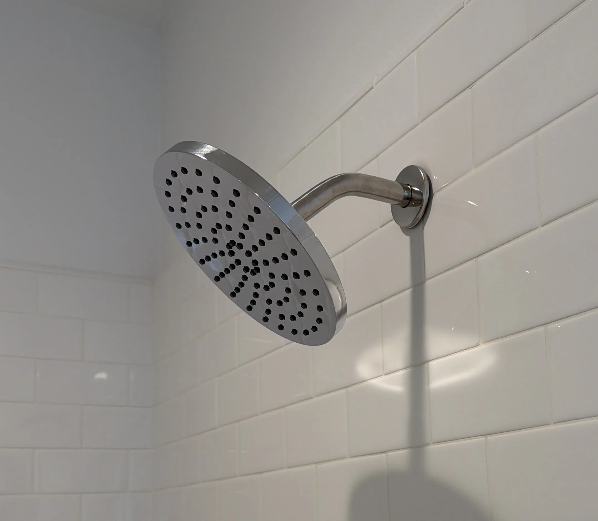
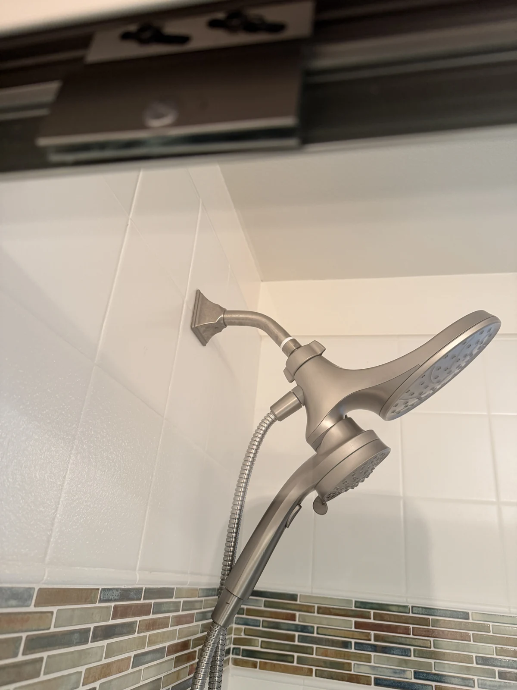
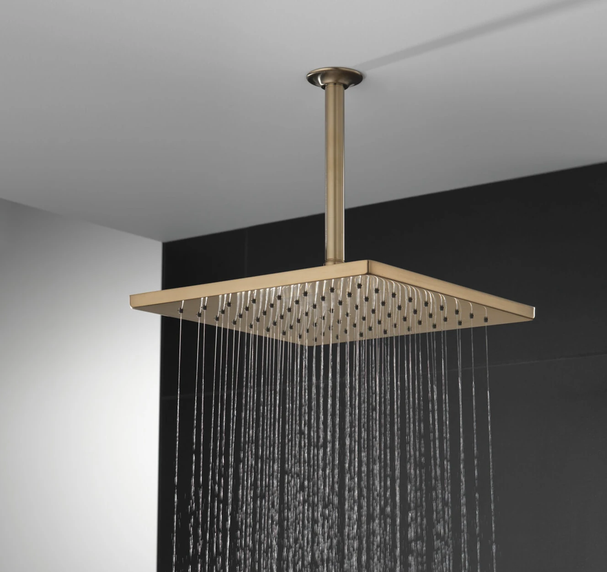

Standard shower head replacement
$55
Labor only. Uses the existing shower arm. Shower arm and escutcheon installation is extra.
Based in Woodbury · Bathroom fixture replacement in Irvine
A new shower head, fitted to your existing shower. Dustin replaces compatible fixed and handheld shower heads you supply, then checks the connections and operation.

Replacement services & pricing
These replacements use a customer-supplied shower head and a sound existing shower arm. Additional arm, trim or wall-mount work is separate. Photos illustrate the fixture types.
$55
Labor only. Uses the existing shower arm. Shower arm and escutcheon installation is extra.

$65
Labor only. Uses the existing shower arm. Shower arm and escutcheon installation is extra.

$65
Labor only. Uses the existing shower arm. Shower arm and escutcheon installation is extra.
What the service covers
Sealing follows the replacement fixture’s connection instructions. The customer supplies the new shower head.
A useful first message
Start with a text about the shower head you want replaced and where you need service. Dustin can confirm the details and help arrange the next step.
Mention other small bathroom repairs if you want the work considered together. Photos or a product link are optional if they help explain your question.
Is water leaking at the connection while the shower runs, or does the head keep dripping after the handle is turned off? Include that detail so the proposed work matches the problem.
A head replacement is a fixture swap. It is not a promise to fix an internal valve problem or improve whole-home water pressure.
Original Ultra work
The photo above shows an Ultra shower head and arm installation in Orange County.
The standard service on this page uses the existing shower arm. If you want the arm or trim changed too, include it in your message for a separate scope review.
See more of Dustin’s work →Common questions
Yes. You supply the new shower head. If you have a compatibility question, text Dustin; a product link or photo can help, but is optional for getting in touch.
Yes, when the supplied head, hose and holder are compatible with the existing shower-arm connection. Additional wall-mounted rails, drilling and accessories need separate assessment.
No. Standard head replacement uses the existing arm. Arm, wall-cover or trim changes are reviewed separately before work.
The cause needs to be checked. Tell Dustin whether it leaks at a connection while running or drips after the handle is off. Internal valve work is different from replacing the shower head.
Text Dustin about the hose, holder or bracket you want replaced. A model, product link or photo can help identify the setup. New wall-mounted rails, drilling and additional accessories need separate assessment.
Dustin handles compatible fixed and handheld replacements at an existing shower arm. Damaged fittings, a loose wall connection or hidden plumbing need separate assessment before the scope is confirmed.
Standard shower head replacement is $55; handheld and rain shower head replacements are $65. You supply the new fixture, and these prices use the existing shower arm. Arm, wall-cover or trim replacement, drilling and additional repairs are separate. Text Dustin to ask about your setup or schedule the work.
Ready to replace it?
Ask a question or arrange your shower head replacement directly with Dustin.
What clients say
Read what homeowners say about working with Dustin. Reviews cover a range of Ultra Home Repair services.
Dustin from Ultra Home Repair did an excellent job professionally descaling my tankless water heater and optimizing its settings\. Before his visit, the hot water wouldn’t turn on unless I opened two faucets, and even then, it took a long time to arrive\. Since Dustin serviced the unit and switched it to Comfort Mode, the hot water has been working beautifully\. The improvement has been life\-changing\! The service cost was also very reasonable\. Ultra Home Repair is honest and upfront, and they won’t gouge you like others\. Professional, knowledgeable, and highly recommended\. Thank you, Dustin\!
Samer Kasm
Should you need anything fixed in your house, Dustin will find a solution! He will find a product that you need for fixing your problem. We have worked with him several times and will continue to do so.
Adela Piskora
I saw that Dustin was at my neighbors flushing out there tankless water heater. It was early evening and I asked him if he could do mine and without hesitation he said “yes” he also did even later In the evening another neighbors!! So nice so professional I will definitely use him for other home repairs.
kelli rodriguez
Dustin immediately responded to my call yesterday about a Error code 15 on our Rennai tankless water heater. He was at our place within hours and quickly diagnosed and fixed our problem, and also improved our hot water delivery to our faucets. He is extremely competent, responsive, super communicative and very cost effective! Five stars all around!
james mazzarella
Wonderful service at reasonable prices. Knowledgeable, professional, timely. Dustin took care of prepping my home for new tenants...a little bit of everything (except painting). I would highly recommend Ultra Home Repair and will definitely call them first for any future maintenance needs.
michelle Ig leary
I had my tankless water heater flushed at my Irvine condo. Dustin was recommended to us by our HOA so needless to say, he’s very experienced. The service didn’t disappoint. Dustin was efficient and professional, answered all my questions, looked at my water pressure issue and suggested fixes. Highly recommend.
Faye An
Dustin was extremely professional in getting my water heater fixed and also completed the yearly flushing process. He was very easy to work with - extremely fast in responding and was able to make it to my appointment at a very short notice. His work was very thorough, clean, and he patiently explained me the issue and the fix he did. It was my first time - Highly recommend Dustin!
Ja Ch
Dustin Swad came by and gave my tankless water heater a long needed flush. He was easy to schedule, was prompt on arrival, and the job was done cleanly and sufficiently. He takes all forms of payment; bill sent via email with payment button. Wouldn’t hesitate to hire him.
Kathy Cabrera
Dustin was great. He was on time and completed my water heater service quickly. Everything was left clean and the pricing was fair. Very happy with his service.
Mike Pahua
My experience working with Ultra Home Repair was amazing. His work was top notch. We had a new tenant moving into our condo and he was very thorough about looking for things that needed to be repaired. He can do anything that needs to be done. We will definitely use him at our home as well.
Loralyn Hjerpe
Once again Dustin and Ultra Home Repair to the rescue. Changed out old kitchen faucet for new one in record time and with his usual precision, cleanliness, courtesy and on-time arrival. If you want a reliable and trustworthy, "ultra" capable handy person - look no further. Five plus stars!
Vince Gil
Dustin came over to flush our tankless water heater in Northwood Irvine. He was right on time, friendly, and professional. We will definitely have him back again for other work.
A J
Amazing work, clean and professional. Highly recommend Dustin
Rod Pierce
Dustin is a great handyman asset that we continue to call upon! He is punctual, cordial, knowledgeable and, most of all, meticulous in his work. Just had him fix an under counter sink that had sank! Before that, replaced LED can lights and even cleaned out and demineralized our tankless water heater. Small or large projects -- you will be glad you called on Justin Swad!
Vincent Gil
Dustin was fast, professional, and extremely knowledgeable! Highly recomended!
bailey chang
I have a Realtor In. I’ve used Danny to Da Ca my water heater. He is so helpful and Goes above and beyond to make sure that everything is smooth. Would definitely use him again. Detailed our water heater and the door was locked and he managed to still take off the door by the hinges to make sure the job got done 10/10
Tina Tan
Finally found an honest plumber! He responded quickly, fixed my water heater right away, was professional, fair, and reasonably priced. Great experience and highly recommend.
shirin bankie
Dustin was great! Fixed everything. Fast and simple. Great service!
Aria Charsetad
Dusting was great! He came to clean out my tankless water heater. Came on time, fast and also so so nice. Definitely will be using him again for other things now too. Highly recommend
Sophia Paliov
I met Dustin through a friend of mine when I was looking for someone to service my tankless water heater. I called him and he came out within a few days and did an excellent job and was very reasonable compared to the other quotes that I had gotten. Since then I have used him several times for various small jobs around the house. Lastnight he came out after hours and replaced my garbage disposal. Dustin is very thorough, very professional, and most of all He’s very reasonable. I have referred him to many of my friends here in Lake Forest and they are very happy with the work that he has done. I Highly recommend Dustin.
Marianne Benson
Highly recommended as a the “one stop” fix everything, and anything, perfect the first time. Dustin is a Pro, on time, efficient, and fair in his pricing for all trades. Start breaking things so you call on his expertise and have it better than new.
Laurent Vrignaud
We recently had issues with our hot water boiler and reached out for solutions. We ended up contacting Dustin, who came highly recommended as one of the most honest, responsive, and experienced professionals in our area—and he absolutely lived up to it. He replied quickly to our message, even though it was late, and was able to schedule a visit the very same evening. During the service, he was incredibly diligent and professional, and we were very satisfied with the results. It finally feels like we’ve found our go-to handyman. Highly recommend Dustin!
Roah Kim
Dustin, owner of Ultra Home Repair, came over to my house at the Great Park in Irvine on a Saturday morning to flush my tankless water heater. He was on time, very personable, fairly priced, and finished in job in approximately one hour. I feel very comfortable recommending him for a tankless water heater flush and will hire him in the future should I require any handyman jobs around the house.
D Jong
Great job restoring and repainting the front door to my condo, which had become dinged and scuffed over time. Thorough and good attention to detail. Recommended +++
Alvaro Zinos-Amaro
Dustin did a fantastic job on a tankless water heater flush and did it for a very affordable and reasonable price. I’m going to have him comeback and do it next year and the year after that.
Kenny Jenkins
My sink was leaking and he came over fixed it within 45 min! Reasonably priced and a nice young man. If anything else breaks I know who I’m calling
Rod Ganjifard
Dustin recently descaled my tank less water heater. He does a very clean and thorough job. I can highly recommend him Hans in Irvine
Hans Schmutz
Dustin did a great job with our Tankless hot water flush out. I watched him do the procedure and he totally knew exactly what he was doing. It went without a problem and his rate for the job was a very good one. I would recommend him for his construction services.
Jeff Arnold
GREAT JOB! He was fast, professional, polite and friendly
Ryan Forse
Dustin Swad of Ultra Home Repair replaced 5 faucets for me, changed out a thermostat, and flushed our tankless water heater. He did a great job, was professional, gave me a great price, and I will definitely hire him again in the future!
Laura Warren
Dustin was prompt, friendly, helpful, answered all my questions and even researched stuff for me. He serviced the tankless water heater and was great!
christine vega
We had Dustin come to our house & gave our tankless water heater a check up & flushed the system. We kept his information to have him come back when it's needed again. Very reasonably priced too !
J J
As a realtor I know how important (and how difficult) it is to find an outstanding handyman, and Dustin is among the best I’ve worked with. He’s great at what he does: Knowledgeable, proactive, punctual, trustworthy… His workmanship, work ethic, and professionalism are excellent. A good handyman is hard to find so you’ll be thrilled to know Dustin.
Anne Suri
Dustin was knowledgeable, professional and friendly. He worked with my schedule and kept me informed via texts of when he would arrive and his progress on the work being done. Reasonable rates and great work!
Susie Motooka
Dustin was extremely responsive to my messages and questions. He was able to finish installing a faucet, complete my painting, replace the bathroom fans and also swap out door knobs in good time. I appreciated his before/ after pictures and his prompt responses to my questions.I would highly recommend him!
Kavi Anand
Dustin provided fantastic work and service. Wouldn’t hesitate to recommend!
Chris Kershaw
Five-star Google rating. No written review.
Noosheen Swad
I recently moved into a new home and had a list of projects I thought would require hiring multiple tradespeople. I was so relieved to find Dustin with Ultra Home Repair. He was able to handle everything in one visit. In just a single day, he mounted my TV and ran the wires through the wall, installed a Ring doorbell, patched and painted a drywall hole (and even helped me color match the paint), and replaced my shower heads and faucets. Everything was done efficiently and with great attention to detail. I’ll definitely be calling Dustin first for any future home repair projects!
Lauren Hardy
I hired Dustin with Ultra Home Repair to redo my closet and assemble some furniture and the whole process was so easy. I just sent him a few pictures of my old closet and links to the new closet system and furniture I wanted assembled. He was able to give me a quick quote right away and scheduled that same week. He came out, removed the old shelving, assembled and installed the new closet system, and replaced the old closet sliding doors with new bifold doors. He also put together the furniture while he was here. Everything turned out great and it couldn’t have been more convenient!
carrie seidler
Everybody NEEDS to use this handyman. I was just amazed at how professional, efficient, and pleasant Dustin is. And, as an added bonus, his estimates came in significantly lower than those I received from others. His webpage shows that he is multi-talented and I've already asked him for quotes on other projects. I look forward to working with him again!
Susan Emery
I hired Dustin of Ultra Home Repair to install pendant lights and ceiling fans. Wanted to give him a shout out — he did a great job, was super clean and conscientious about leaving everything clean, etc. Highly recommend!
Anh Lilly
Dustin was able to help me with a few things around the house. He was on time and very accommodating and flexible. Highly recommended!
Michael C.
I want to give a shout out to Dustin at Ultra Home Repair. He came over after giving me an estimate ahead of time of the work I needed done. He replaced outdoor lighting and hung 2 wall iron decor into stucco off my patio. If you need work done I highly recommend Ultra Home Repair.
Linda P.